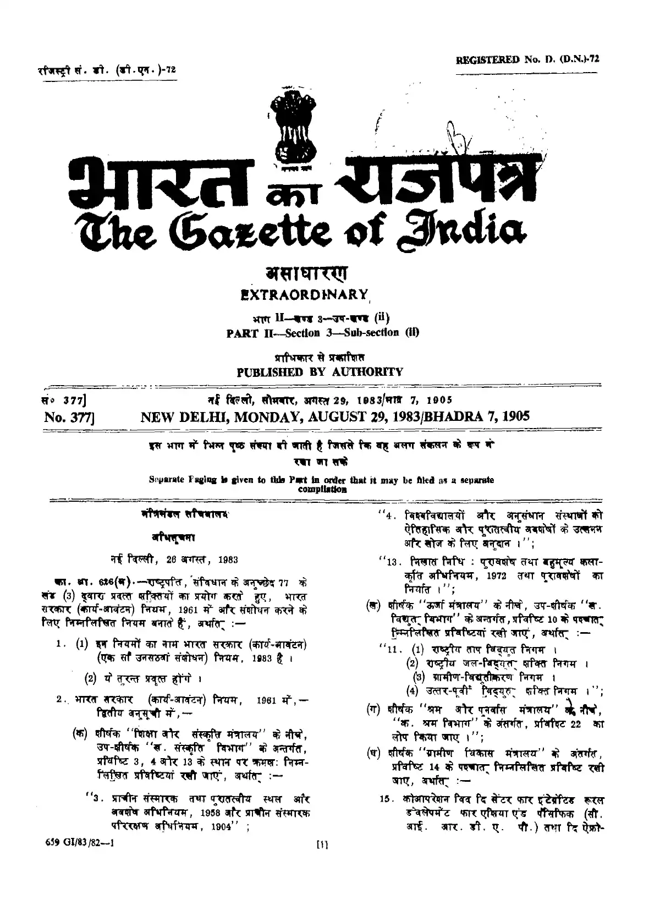
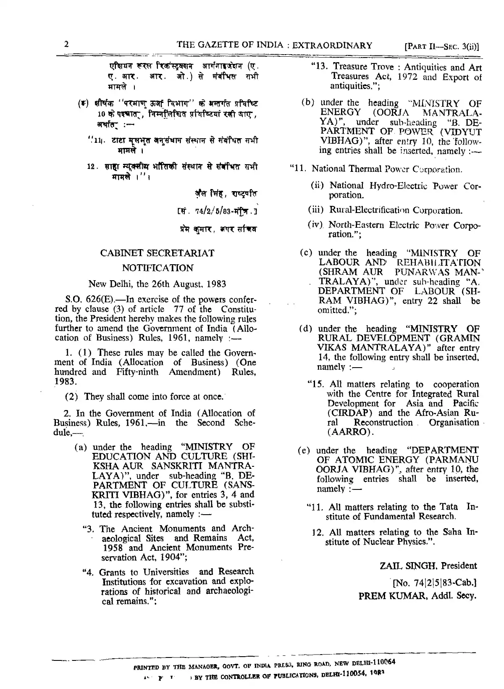

Amendment #159 (S.O. 626(E), 1983)
7 changes: 0 to the First Schedule, 7 to the Second Schedule. 7 applied
The order, page by page
Page 1 of 2

Page 2 of 2

1234567Schedule 2 › MINISTRY OF EDUCATION AND CULTURE › DEPARTMENT OF CULTURE › entry 3
- 3. The Ancient Monuments and Archaeological Sites and Remains Act 1958 and Ancient Monuments Preservation Act, 1904
applied at schedule 2 › ministry MINISTRY OF EDUCATION AND CULTURE (SHIKSHA AUR SANSKRITI MANTRA- LAYA) › department B › entry 3 in the Rules after #159
Schedule 2 › MINISTRY OF EDUCATION AND CULTURE › DEPARTMENT OF CULTURE › entry 4
- 4. Grants to Universities and Research Institutions for excavation and explorations of historical and archaeological remains.
applied at schedule 2 › ministry MINISTRY OF EDUCATION AND CULTURE (SHIKSHA AUR SANSKRITI MANTRA- LAYA) › department B › entry 4 in the Rules after #159
Schedule 2 › MINISTRY OF EDUCATION AND CULTURE › DEPARTMENT OF CULTURE › entry 13
- 13. Treasure Trove Antiquities and Art Treasures Act, 1972 and Export of antiquities.
applied at schedule 2 › ministry MINISTRY OF EDUCATION AND CULTURE (SHIKSHA AUR SANSKRITI MANTRA- LAYA) › department B › entry 13 in the Rules after #159
after Schedule 2 › MINISTRY OF ENERGY › DEPARTMENT OF POWER › entry 10
- 11. National Thermal Power Corporation.
- ii. National Hydro-Electric Power Corporation.
- iii. Rural-Electrification Corporation.
- iv. North-Eastern Electric Power Corporation.
applied at schedule 2 › ministry MINISTRY OF ENERGY (OORJA MAN- TRALAYA). › department B › entry 11 in the Rules after #159
Schedule 2 › MINISTRY OF LABOUR AND REHABILITATION › DEPARTMENT OF LABOUR › entry 22
applied at schedule 2 › ministry MINISTRY OF LABOUR AND REHABI- LITATION › department A › part V › entry 22 in the Rules after #159
after Schedule 2 › MINISTRY OF RURAL DEVELOPMENT › entry 14
- 15. All matters relating to cooperation with the Centre for Integrated Rural Development for Asia and Pacific (CIRDAP) and the Afro-Asian Rural Reconstruction Organisation (AARRO).
applied at schedule 2 › ministry MINISTRY OF RURAL DEVELOPMENT › entry 15 in the Rules after #159
after Schedule 2 › DEPARTMENT OF ATOMIC ENERGY › entry 10
- 11. All matters relating to the Tata Institute of Fundamental Research.
- 12. All matters relating to the Saha Institute of Nuclear Physics.
applied at schedule 2 › ministry DEPARTMENT OF ATOMIC ENERGY › entry 11 in the Rules after #159
How this document was read
From the Government of India (Allocation of Business) Rules, 1961 and their amendments, as published by the Cabinet Secretariat (cabsec.gov.in), read by orgpedia. The readings of the older scanned gazettes have known gaps.